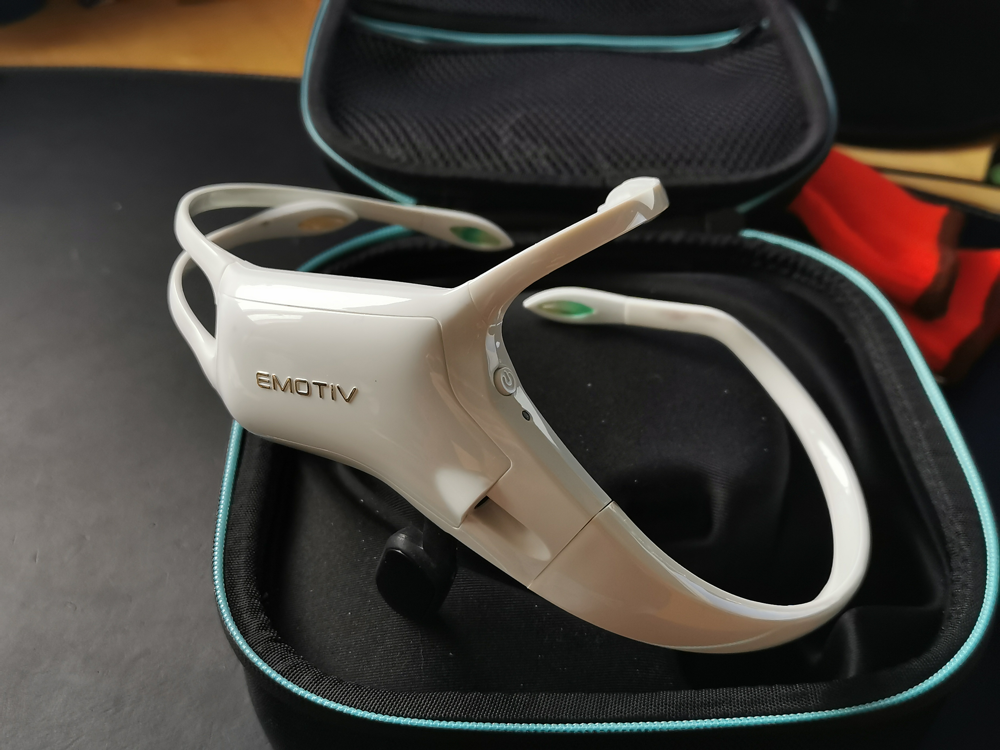
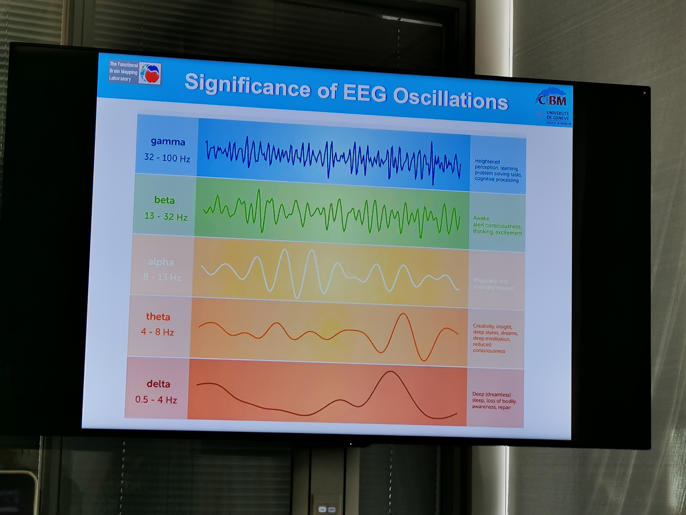
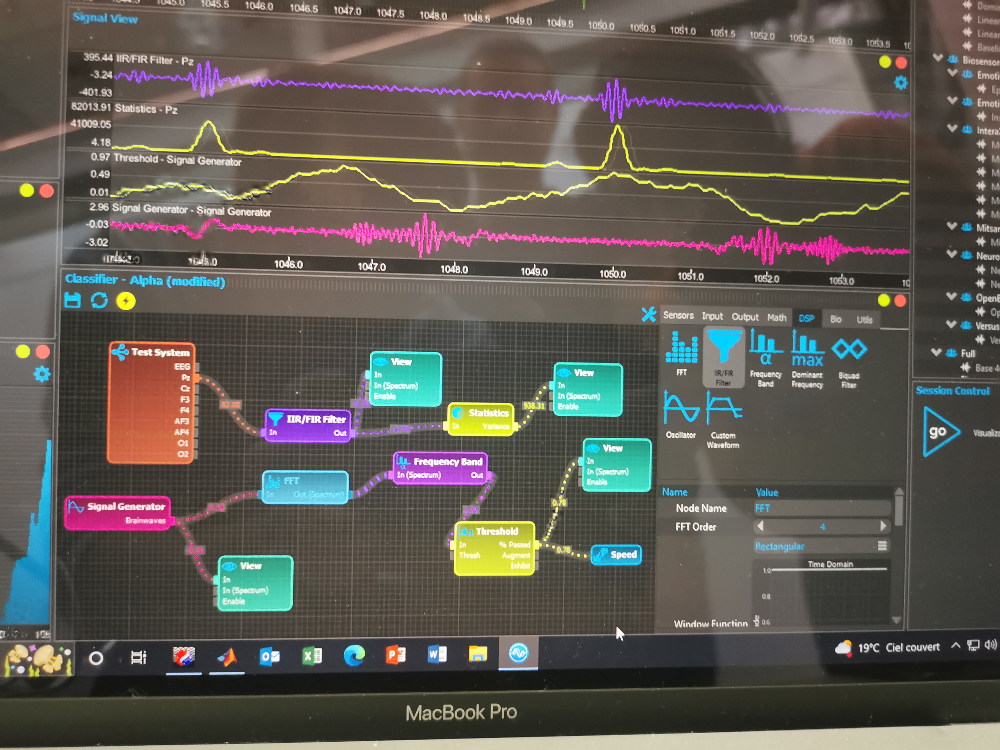

Development of a Brain-Computer Interface
My most exciting side project
Project Overview
I am thrilled to provide an update on my personal project that's all about delving into the fascinating world of brain-computer interfaces (BCI) using EEG sensors. This report captures the progress and challenges I've encountered as I explore the potential of EEG technology and its applications.
Acknowledging the Project Goal
At the heart of this endeavor is a simple goal: to learn. I've always been captivated by the idea of using our thoughts to interact with technology, and this project is my way of taking a deep dive into the field of brain-computer interfaces. While the end result is important, my main focus is on the journey of discovery and the joy of creating something new.
Exploring EEG Sensors Potential
This project was born out of curiosity. Back in 2019, before my internship at MEDES, I stumbled upon the world of EEG sensors. These non-invasive devices caught my attention because they could tap into the brain's electrical signals using sensors on the scalp. It was like peering into the mind's conversation with technology, and I was eager to learn more.
Selecting an EEG Headset for Real-Time Processing
Choosing the right EEG headset was a bit like entering uncharted waters. I didn't have much experience in real-time data processing for these sensors, but I was determined to learn. After sifting through options, I settled on the Emotiv Insight headset. Its balance of quality and affordability resonated with me, aligning with my goal of exploring without breaking the bank.
Challenges and Progress in Adapting the Vision
As with any project, there were bumps in the road. Extracting raw data from the headset turned out to be trickier than expected. However, thanks to a helpful GitHub repository and the support of the open-source community, I found a way. Adapting my original vision was also a lesson in humility. I had initially aimed for a game controlled by cognitive commands, but reality brought me back to earth.
Gaining Practical Experience with EEG Data
My journey took me to an educational opportunity—a week-long course on EEG analysis. This experience, led by experts like Christoph Michel and Denis Brunet at Campus Biotech, was a crash course in EEG data analysis. From preprocessing to neurofeedback, I learned to navigate EEG data with Cartool and even dabbled in real-time analysis with experts like Victor Férat and Thomas Ros.
Technical Hurdles in EEG Integration
Technical challenges were inevitable, and connecting the EEG headset to Neuromore for real-time processing was no exception. It was a humbling experience, and I reached out to experts for guidance. Thanks to their help, I found a way to integrate the headset using a pipeline involving Cykit, OpenVibe, Python, and OSC. It wasn't without struggle, but the breakthrough was worth it.
Innovative Approaches to Cognitive Control
One of the highlights was achieving a cognitive command using alpha wave modulation. It wasn't the smoothest process and demanded intense concentration, but it opened my eyes to the potential. This led me to a new avenue—integrating cognitive control into a 3D-printed prosthetic hand. The journey is ongoing, but the possibilities are thrilling.
Conclusion (for now)
This project is still under study at the moment, but has given me a foothold in the world of brain computer interfaces, which I'd like to explore further in the future.
Acknowledgments
None of this would have been possible without the support and expertise of individuals who generously shared their knowledge. My heartfelt thanks go to Christoph Michel, Denis Brunet, Victor Férat, Thomas Ros, and everyone at Campus Biotech for their guidance. Gratitude is also owed to the open-source community for their willingness to help a learner on this journey of discovery.